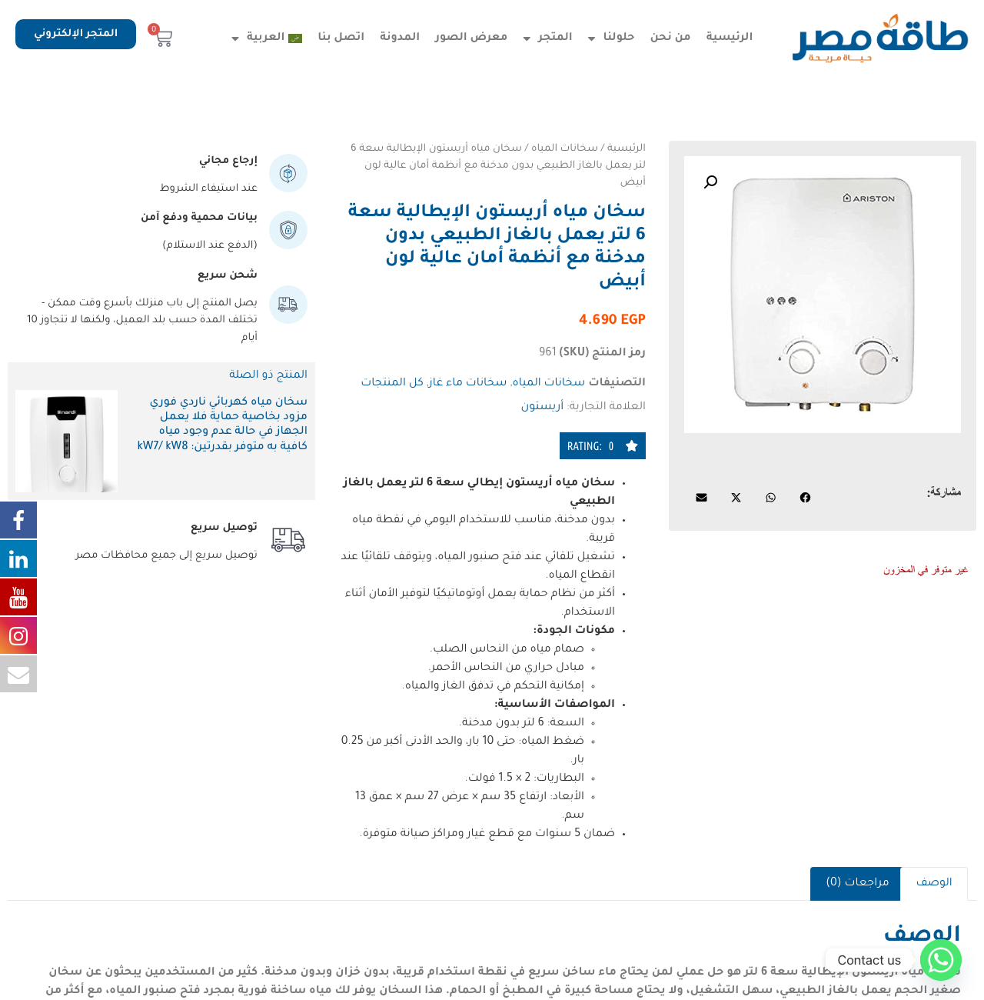
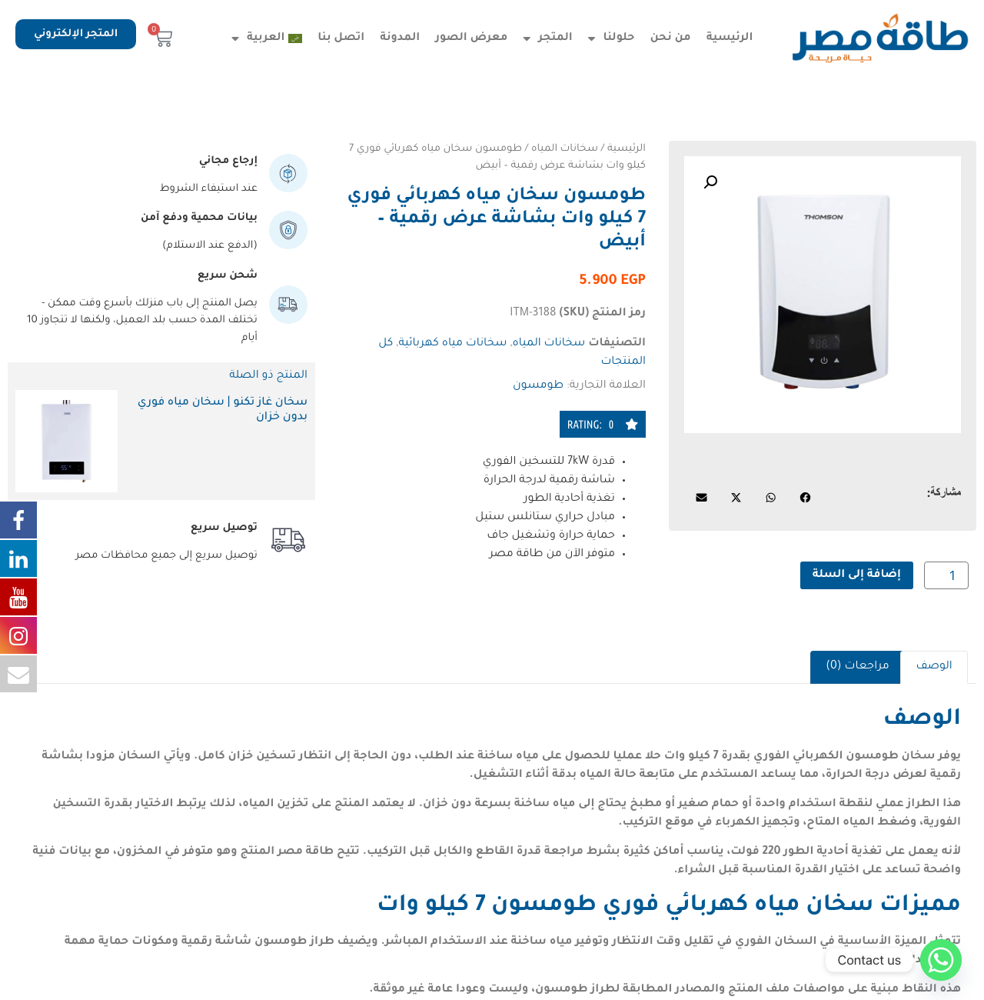
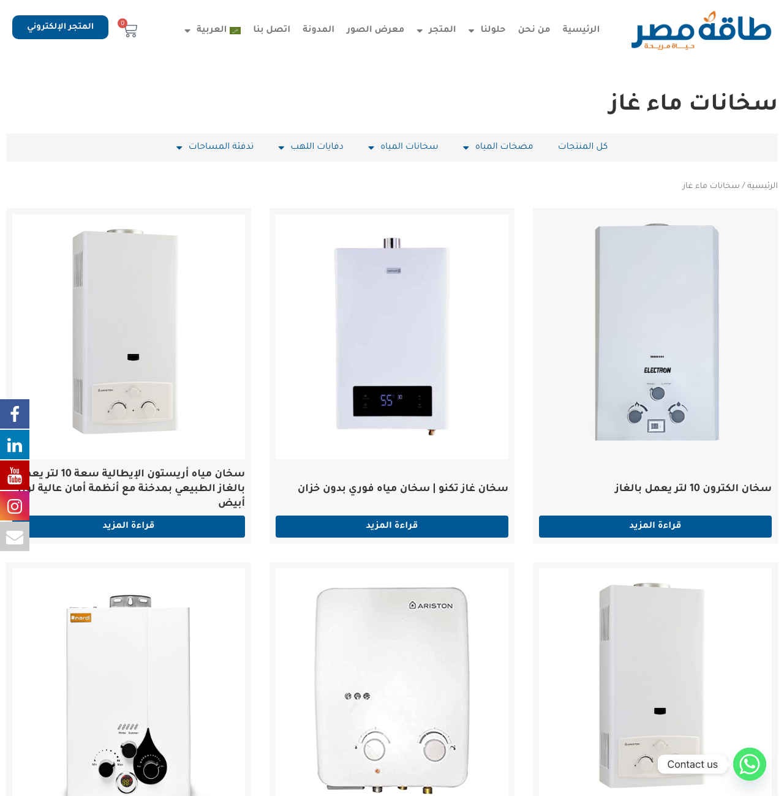
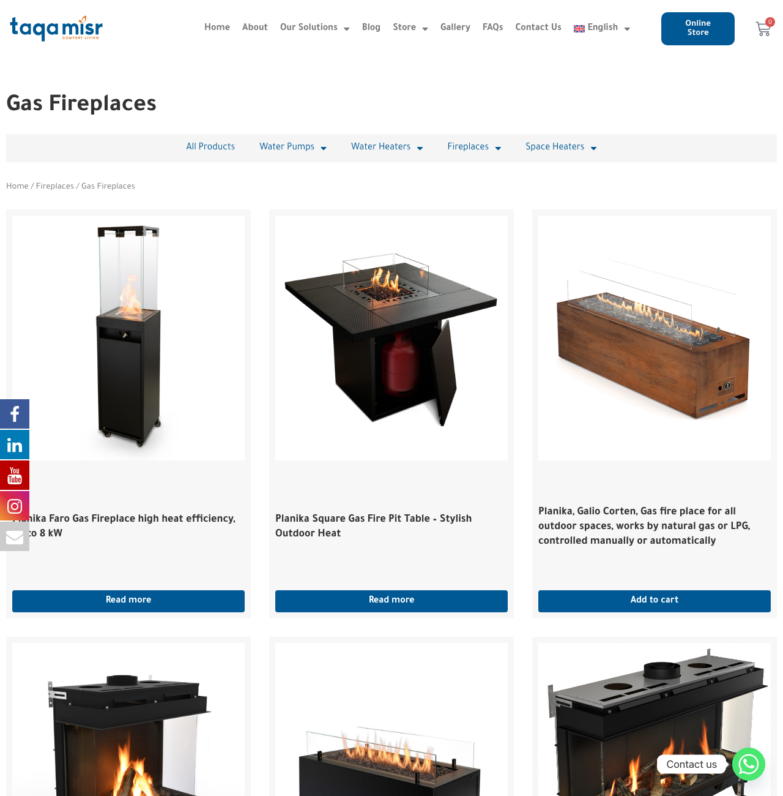

يونيو كان شهر عودة للعمل على الـ SEO، مع توسع واضح في المحتوى التجاري ومتابعة خاصة لدمج المتجر.
سياق الشهر: جاء عمل يونيو بعد فترة توقف منذ مارس الماضي في نشاط SEO بسبب أعطال الاستضافة المتكررة وطلب طاقة مصر توقف فريق SEO عن العمل خلال فترة عمل المطور على دمج الموقع والستور، لذلك كان التركيز على استعادة انتظام العمل، وحماية الزيارات القائمة، ثم دفع صفحات المنتجات والتصنيفات للأمام. أعطال الهوست والتوقف في تحسين محركات البحث لا يظهر أثرهما دائما في نفس اليوم، لكنهما سببا هبوطا في النتائج وجعلا العودة والاستمرارية في الشهور القادمة ضروريتين حتى يظهر أثر التحسينات بالكامل. ونرجو ألا يحدث توقف مشابه مرة أخرى.
العمل الشهري المعتاد
- متابعة أداء البحث والكلمات والصفحات التي تجلب نقرات.
- نشر وإعادة كتابة صفحات المنتجات والتصنيفات.
- تحسين الروابط الداخلية وربط الصفحات التجارية ببعضها.
- مراجعة تجربة الموبايل والمواضع في نتائج البحث.
عمل استثنائي في يونيو
- متابعة دمج المتجر القديم داخل الموقع الحالي.
- مراجعة روابط المتجر القديم التي كانت تظهر في البحث.
- التأكد من أن 210 روابط قديمة أصبحت تصل إلى الصفحات الحالية.

هذه هي الأقسام التي تمثل العمل الأساسي المتكرر في SEO: الأداء، المحتوى، التصنيفات، الكلمات، وتجربة الموبايل.
هذه الأعمال تحتاج استمرار شهري حتى لا يتوقف تراكم النتائج، وحتى تبقى صفحات المنتجات والتصنيفات قابلة للظهور والمنافسة في البحث.
بيانات Search Console لشهر يونيو: 802 نقرة، 60.4 ألف ظهور، ومتوسط موضع 7.74.
تسجل بيانات Google Search Console لشهر يونيو 802 نقرة، و60,357 ظهورا، وCTR بنسبة 1.33%، ومتوسط موضع 7.74.


تم تجاوز المتفق عليه شهريا بمحتوى منتجات وتصنيفات واضح.
إجمالي الصفحات
26 صفحة عربية وإنجليزية تم نشرها أو إعادة كتابتها بالكامل خلال يونيو.
إجمالي الموضوعات
13 موضوعا كاملا باللغتين مقابل 4 موضوعات متفق عليها شهريا.
نسبة الزيادة
325% من المتفق عليه شهريا، أي 225% أعلى من المطلوب.
| مجال العمل | الصفحات / التغطية | القيمة التجارية | الحالة |
|---|---|---|---|
| تحسين صفحات المنتجات | سخان مياه غاز Ariston سعة 6 لتر، ومضخة Grundfos CMBE، بالعربية والإنجليزية. | تحسين الشرح، إرشاد المشتري، المواصفات، الأسئلة الشائعة، الروابط الداخلية، ووصف الصور. | منشور |
| إطلاق منتجات سخانات المياه | 5 منتجات سخانات مياه جديدة بالعربية والإنجليزية: سخانات كهربائية 7kW و9kW و12kW، وسخانات غاز 16L و20L. | إضافة مجموعة منتجات تجارية جديدة تشمل الأسعار، حالة التوفر، التصنيفات، العلامة التجارية، الصور، والروابط الداخلية. | منشور ضمن يونيو |
| محتوى التصنيفات | 12 صفحة عربية وإنجليزية تشمل سخانات مياه غاز، دفايات غاز، دفايات إيثانول حيوي، مضخات صرف، مضخات تقليب، مضخات رفع، ومضخات غاطسة. | تقوية صفحات التصنيفات التجارية لتستهدف طلب البحث على مستوى المجموعة، وليس فقط أسماء المنتجات الفردية. | منشور / معاد كتابته |
| الروابط الداخلية | إضافة وتصحيح روابط بين المنتجات، وبين المنتجات والتصنيفات، وبين التصنيفات والمنتجات بالعربية والإنجليزية. | تحسين اكتشاف الصفحات، والحفاظ على مسار اللغة الصحيح للمستخدم، وتوضيح العلاقات بين المنتجات والتصنيفات لمحركات البحث. | تم التحقق |
قائمة الصفحات التي تم نشرها أو إعادة كتابتها بالكامل
| الصفحة | الرابط | نوع العمل |
|---|---|---|
| سخان مياه أريستون الإيطالية سعة 6 لتر | فتح الصفحة | إعادة كتابة صفحة منتج كاملة بالعربية |
| 6 Liter Ariston Gas Water Heater NG | Open page | Full English product rewrite |
| مضخة رفع المياه CMBE توفر ضغط مياه ثابت | فتح الصفحة | إعادة كتابة صفحة منتج كاملة بالعربية |
| CMBE Booster Pump Grundfos | Open page | Full English product rewrite |
| سخان كهربائي طومسون 7kW | فتح الصفحة | نشر منتج جديد بالعربية |
| Thomson Instant Electric Water Heater 7kW | Open page | New English product page |
| سخان كهربائي طومسون 9kW | فتح الصفحة | نشر منتج جديد بالعربية |
| Thomson Instant Electric Water Heater 9kW | Open page | New English product page |
| سخان كهربائي طومسون 12kW | فتح الصفحة | نشر منتج جديد بالعربية |
| Thomson Instant Electric Water Heater 12kW | Open page | New English product page |
| سخان مياه غاز طومسون 16 لتر | فتح الصفحة | نشر منتج جديد بالعربية |
| Thomson Gas Water Heater 16L | Open page | New English product page |
| سخان مياه غاز طومسون 20 لتر | فتح الصفحة | نشر منتج جديد بالعربية |
| Thomson Gas Water Heater 20L | Open page | New English product page |
| سخانات ماء غاز | فتح الصفحة | إعادة كتابة تصنيف تجاري بالعربية |
| Gas Water Heaters | Open page | Full English category rewrite |
| دفايات لهب تعمل بالغاز | فتح الصفحة | إعادة كتابة تصنيف تجاري بالعربية |
| Gas Fireplaces | Open page | Full English category rewrite |
| دفايات لهب تعمل بالإيثانول الحيوي | فتح الصفحة | إعادة كتابة تصنيف تجاري بالعربية |
| Bioethanol Fireplaces | Open page | Full English category rewrite |
| مضخات صرف | فتح الصفحة | إعادة كتابة تصنيف تجاري بالعربية |
| Drainage | Open page | Full English category rewrite |
| مضخات تقليب | فتح الصفحة | إعادة كتابة تصنيف تجاري بالعربية |
| Circulators | Open page | Full English category rewrite |
| Booster Pumps | Open page | Full English category rewrite |
| Submersible Pumps | Open page | Full English category rewrite |


تحولت صفحات التصنيفات من قوائم قصيرة إلى صفحات مفيدة للشراء والبحث.
تصنيفات عربية تمت إعادة كتابتها
- سخانات ماء غاز
- دفايات لهب تعمل بالغاز للمنازل والحدائق
- دفايات لهب تعمل بالإيثانول الحيوي
- مضخات صرف
- مضخات تقليب
تصنيفات إنجليزية تمت إعادة كتابتها
- Gas water heaters
- Gas fireplaces
- Bioethanol fireplaces
- Booster pumps
- Submersible pumps
- Drainage
- Circulators


الكلمات المهمة مرتبطة بصفحات واضحة يمكن متابعتها.
كلمات جلبت نقرات في بيانات يونيو
| الكلمة المفتاحية | الصفحة التي حصلت على الزيارات | النقرات | الظهور | الترتيب في جوجل |
|---|---|---|---|---|
| taqa misr | الصفحة الرئيسية | 46 | 121 | #1 في Ahrefs |
| طاقة مصر | الصفحة الرئيسية العربية | 33 | 93 | #1 في Ahrefs |
| شركة طاقة مصر | الصفحة الرئيسية العربية | 19 | 396 | #1 في Ahrefs |
| اتوماتيك مضخة الماء لا تتوقف | مقال حل مشكلة مضخة الماء لا تتوقف | 9 | 122 | متوسط 4.54 في Search Console |
| حل مشكلة ضعف ضغط المياه في الطوابق العلوية | مقال ضعف ضغط المياه | 6 | 225 | متوسط 4.36 في Search Console |
| taqamisr | Domestic Water Pumps | 5 | 5 | متوسط 1.00 في Search Console |
| كيفية تركيب مضخة الماء في الخزان | مقال تركيب مضخة الماء | 5 | 443 | متوسط 5.00 في Search Console |
| electric fireplace egypt | Fireplaces | 4 | 25 | #4 في Ahrefs |
| تدفئة مركزية | صفحة التدفئة المركزية | 3 | 483 | #1 في Ahrefs |
كلمات نركز عليها خلال الثلاثة أشهر القادمة
| الكلمة | الصفحة المرتبطة | حجم البحث الشهري في مصر | النقرات | الظهور | الترتيب في جوجل |
|---|---|---|---|---|---|
| غلاية مركزية | تسخين مركزي للمياه | -- | 2 | 54 | 4.28 |
| غلايات مركزية | تسخين مركزي للمياه | -- | 1 | 25 | 6.92 |
| غلايات تسخين مركزي | تسخين مركزي للمياه | -- | 0 | 0 | لا يوجد |
| غلاية تسخين مركزي | تسخين مركزي للمياه | -- | 0 | 17 | 2.24 |
| غلاية مياه مركزي | تسخين مركزي للمياه | -- | 0 | 0 | لا يوجد |
| تدفئة تحت البلاط | أنظمة التدفئة الأرضية للمنازل | 50 | 0 | 6 | 11.83 |
| التسخين المركزي | التدفئة المركزية | 50 | 0 | 0 | لا يوجد |
| Central heating | Central Space Heating | 50 | 0 | 184 | 11.66، و #5 في Ahrefs |
| Central water heating | Central Space Heating | 50 | 0 | 11 | 19.27 |
| Radiator | Electric Towel Radiators | 5,000 | 0 | 8 | 6.25 |
| Central poilar | Central Space Heating | -- | 0 | 0 | لا يوجد |
كلمات تحسنت في الترتيب في جوجل مع الصفحة المرتبطة بها
| الكلمة المفتاحية | الصفحة المرتبة | موضع يونيو | الترتيب السابق في جوجل | الحركة |
|---|---|---|---|---|
| دفاية غاز | دفايات لهب تعمل بالغاز | #1 | #2 | صعود مركز واحد |
| دفاية حمام | دفايات الحمام الكهربائية | #1 | #2 | صعود مركز واحد |
| التدفئة المركزية | صفحة التدفئة المركزية | #1 | #3 | صعود مركزين |
| سخان اريستون | صفحة علامة أريستون | #10 | #25 | صعود 15 مركزا |
| مضخة مياه | تصنيف مضخات المياه | #7 | #26 | صعود 19 مركزا |
| heating system | Central Space Heating | #1 | #4 | صعود 3 مراكز |
| towel warmer | Electric Towel Radiators | #1 | #2 | صعود مركز واحد |
| كيفية زيادة ضغط الماء في المواسير | مقال ضعف ضغط المياه | #2 | #3 | صعود مركز واحد |
| مميزات وعيوب سخان غاز اريستون 6 لتر | صفحة سخان أريستون 6 لتر | #8 | لم يكن ظاهرا | دخول جديد للصفحة الأولى |

تحليل النقرات حسب الجهاز والترتيب في جوجل.
توزيع الأجهزة
حقق الموبايل نحو 82% من نقرات يونيو، لذلك يجب أن تبقى صفحات المنتجات والتصنيفات سريعة وواضحة وموجهة لاتخاذ الإجراء على الموبايل.
توزيع المواضع
معظم النقرات في عرض توزيع المواضع جاءت من نتائج الصفحة الأولى. الفرصة التالية هي رفع مزيد من الصفحات التجارية من الصفحة الثانية إلى المراكز 4-10، ثم دفع الصفحات القوية نحو أول ثلاثة مراكز.
تمت حماية الصفحات التي كانت تظهر من روابط المتجر القديم أثناء دمج المتجر داخل الموقع.
لماذا كان هذا العمل مهما؟ عند نقل المتجر من نطاق فرعي منفصل إلى داخل الموقع الحالي، قد تستمر نتائج Google في عرض روابط المتجر القديم لفترة. هذا طبيعي في أي موقع بعد تغيير هيكله، لكنه يصبح خطرا إذا ضغط المستخدم على نتيجة قديمة ولم يصل إلى صفحة المنتج أو التصنيف الحالية.
لذلك كان دور المتابعة هو حماية الزيارات التي لديها نية شراء: مراجعة الروابط القديمة، والتأكد من وصولها إلى الصفحات الحالية، ومراقبة أن دمج الموقع والستور لا يؤدي إلى فقدان صفحات كانت تظهر فعلا في البحث.
ما الذي كان يمكن أن يحدث؟
- روابط قديمة للمنتجات والتصنيفات كانت ما زالت تظهر في نتائج البحث.
- بعض الروابط القديمة لم تكن تصل إلى صفحة المنتج أو التصنيف الحالي.
- الخطر كان فقدان زيارات لها نية شراء أو تصفح منتجات.
ما الذي تم تأمينه؟
- 210 من 210 روابط قديمة تم التأكد أنها تصل للصفحات الحالية.
- أصبحت روابط المنتجات العربية والإنجليزية تصل إلى الصفحات الحالية.
- تم توحيد روابط التصنيفات والعلامات التجارية داخل هيكل الموقع الحالي.
الخلاصة
يونيو كان شهر عودة وتنظيم: عاد العمل الشهري المعتاد على SEO، وتم توسيع صفحات المنتجات والتصنيفات بأكثر من المتفق عليه، وفي الوقت نفسه تمت متابعة العمل الاستثنائي الخاص بدمج المتجر القديم داخل الموقع الحالي وحماية الروابط القديمة.
الأولوية التالية هي الاستمرار دون توقف: متابعة أداء صفحات المنتجات والتصنيفات، تحسين الصفحات التي بدأت تدخل الصفحة الأولى، ومراقبة أثر دمج المتجر حتى تستقر إشارات البحث بالكامل.